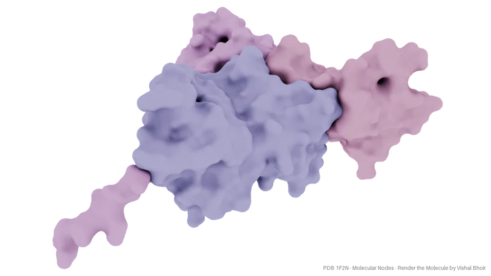
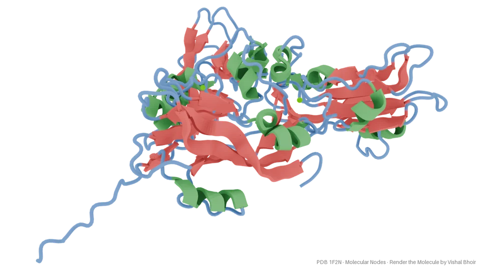
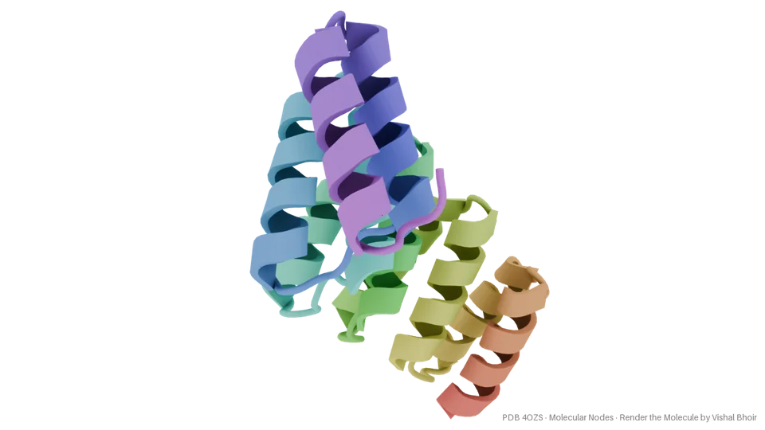

Render the Molecule
by Vishal Bhoir
Type a Protein Data Bank ID and get a publication-quality image, rendered with Blender and Molecular Nodes.
Web app: nothing to install, with a 3D preview you can turn to choose the exact view.
Colab: free, on your own Google session.



Cite
Bhoir, V. (2026). Render the Molecule (Version 0.1.0). Zenodo.
https://doi.org/10.5281/zenodo.23960655
Every image comes with its full citation text, including Molecular Nodes and the PDB entry.